| 日付 | 2020年8月2日（日） - 2020年8月6日（木） | ||||
|---|---|---|---|---|---|
| 山域 | 妙高周辺 | ||||
| メンバー | 家族（妻、長女・9歳、長男・7歳） | ||||
| 山行形態 | 子連れ4泊5日キャンプ | ||||
| アクセス | 車 | ||||
| ルート |
|
4日目
5時半起床。今日も元気にザックでセミが羽化している。
出かける前に木に移してやる。
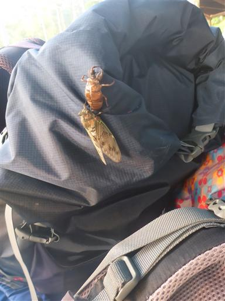
本日は斑尾高原の沼の原湿原を散策予定。
斑尾山を勧めたのだが子供達に大反対されてしまった…
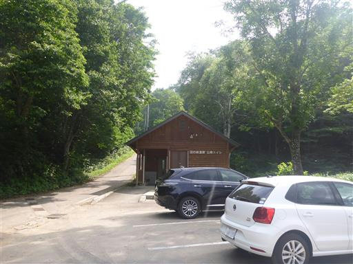
今回は西（右）側の赤線ロングコースを選択。
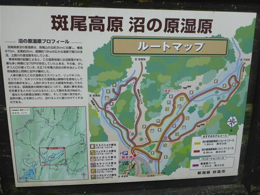
ノカンゾウだろうか？オレンジ色の花が咲いている。
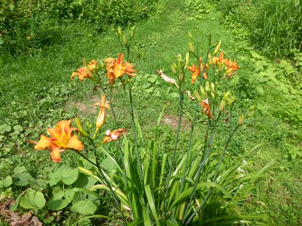
湿原に到着。木道はあるが、葦が繁茂していてあまり湿原っぽくない。
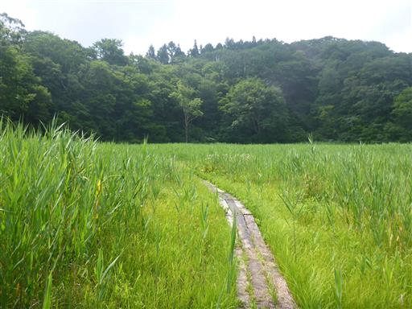
足元にシラヒゲソウがたくさん花を咲かせている。
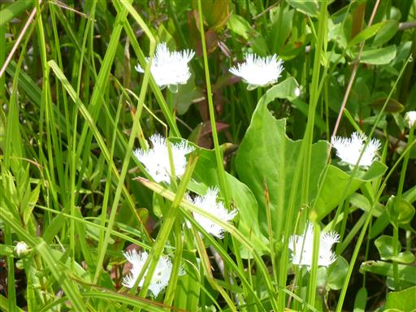
サワギキョウ。
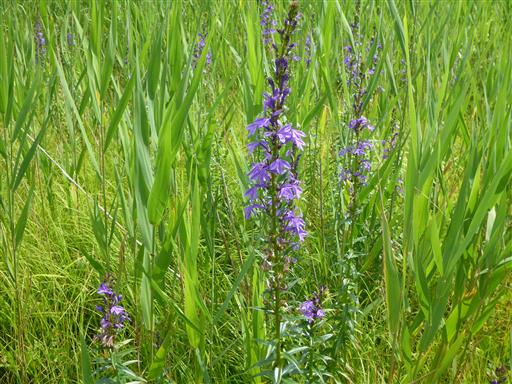
ミゾソバ。小さくて可愛らしい花だ。
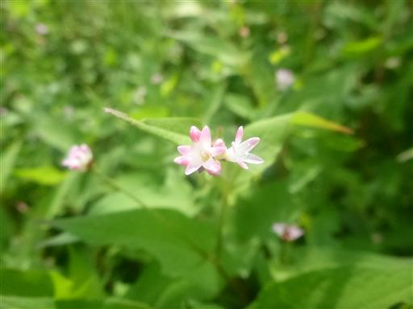
湿原にはバッタが無数にいる。
キャンプ場にバッタがあまりいなかったため、子供達は喜んでいる。
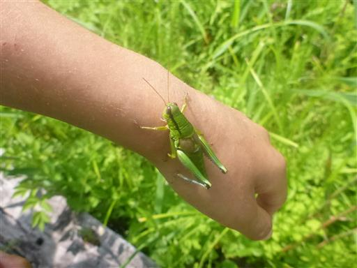
キアゲハの幼虫。大きい。
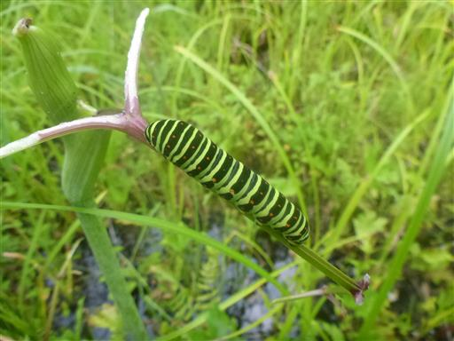
イトトンボ。
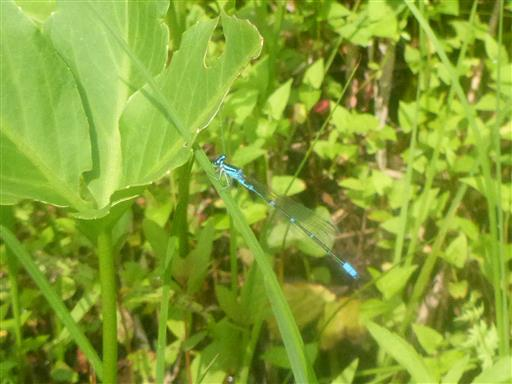
これは一体何だろう？
帰って調べたらトリノフンダマシという名の蜘蛛だった。
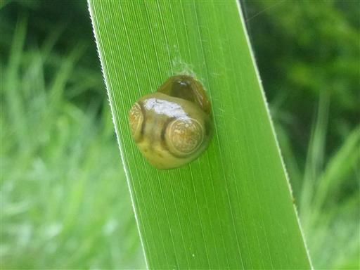
この湿原は植物・動物の宝庫だ。
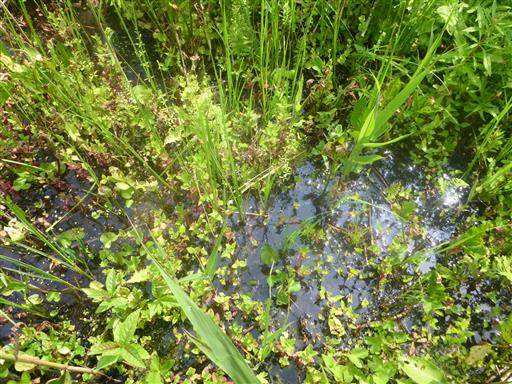
葦の葉や茎にしがみついて死んでいるバッタをたくさん見かける。
最初はバッタの抜け殻かと思っていたが、帰って調べてみたら違うようだ。
菌類にやられているらしく、これに感染すると胞子を飛ばすために高いところに登ってから死ぬようだ。
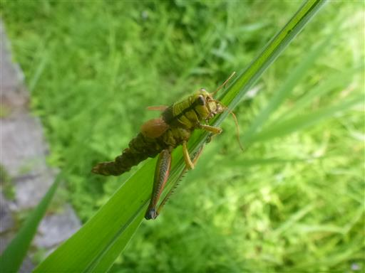
少し高台があり、ここから湿原を見渡せる。
地図に書かれていた「眺望バツグン」は言い過ぎだが、確かに展望が良い。
一列に並んでいる木は、川が流れているところだ。
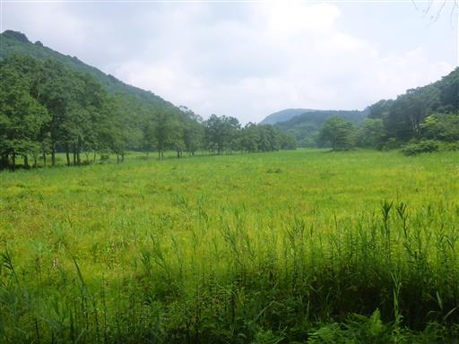
道は藪っぽい。ほとんど人が歩いていないのだろう。
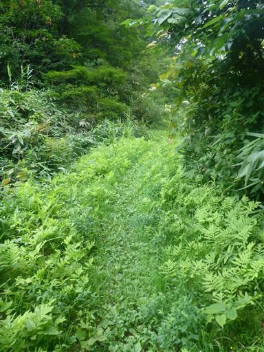
オオウバユリ。大柄な花だ。
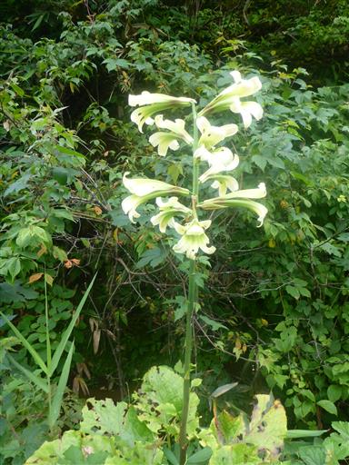
背よりも遥かに高いシシウド。
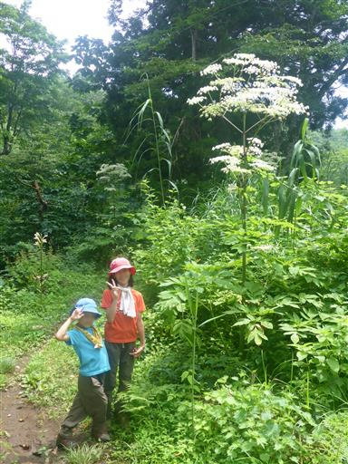
開く直前の花。蕾と言っていいのだろうか？
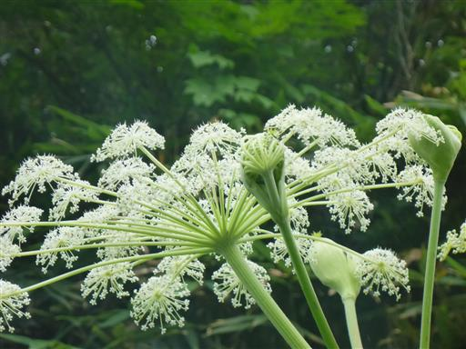
タマゴタケだろうか？きれいな色のキノコだ。
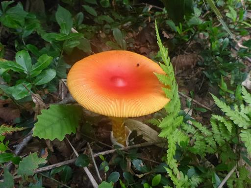
3本のシラカバが目立っている。
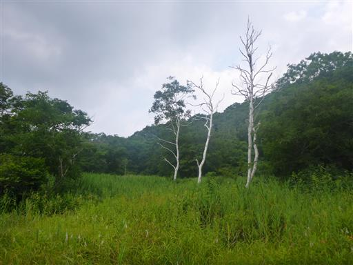
見てるだけで暑い景色。全てが緑に包まれている。
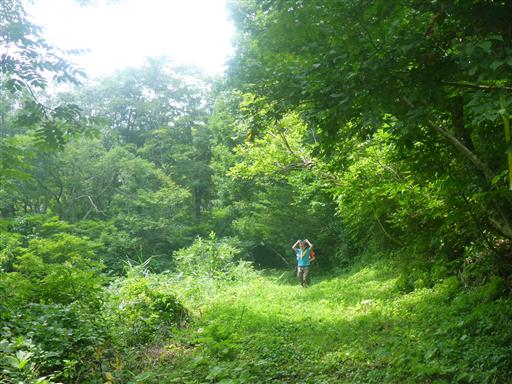
湿原に戻ってくる。
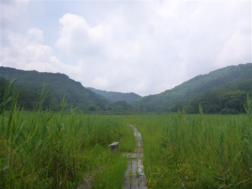
相変わらずバッタの数は多い。
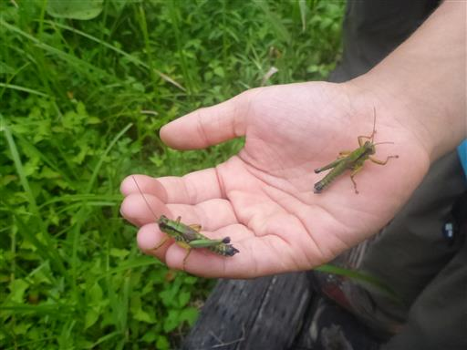
そして死んでいるバッタの数も多い。こちらは折り重なっている。
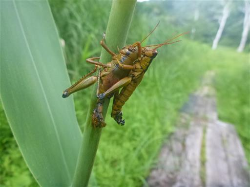
右のバッタももう駄目なのだろうか？生物界の生存競争は厳しい。
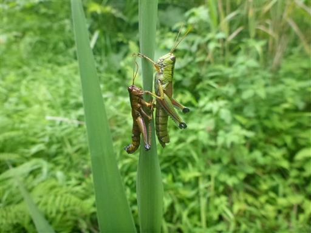
この花は一体何だろう？ワタスゲのように一面に咲いている。
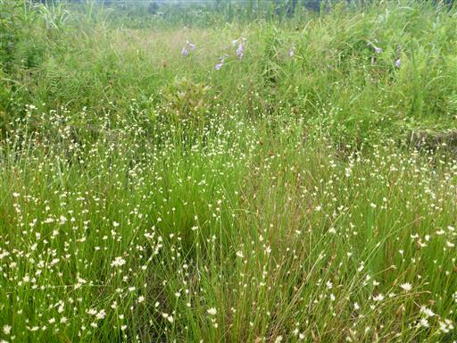
拡大して撮ってみる。
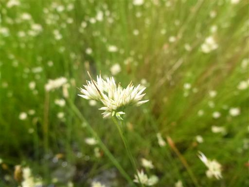
湿原に流れる川に出てくる。巨大化した水芭蕉の葉が並んでいる。
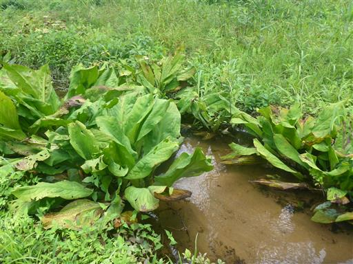
オタカラコウ。
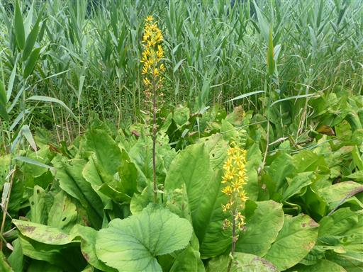
毛虫を発見。全く動かないので棒でつついてみたら、ものすごい速さで逃げて行った。
毛虫がこんなに速く歩けるとは知らなかった。
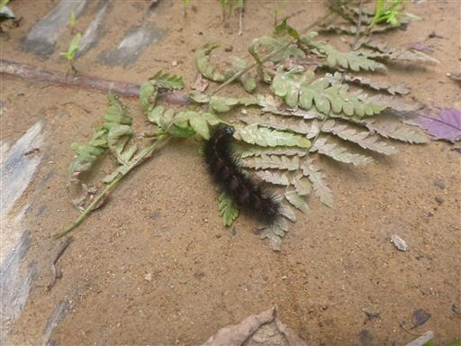
オニヤンマ。湿原を歩いている途中、ずっと周囲を飛んでいたがなかなか止まらず
ようやく羽を休めているオニヤンマを撮影できた。

球状の花が可愛らしい。ドクゼリだろうか？だとしたら猛毒植物だ。
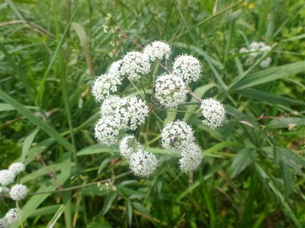
水芭蕉の葉が川を埋め尽くしている。春はきれいなのだろう。
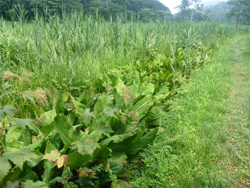
小川を橋で渡る。道草を食いながら、ぐるっと一周2時間ほどだった。
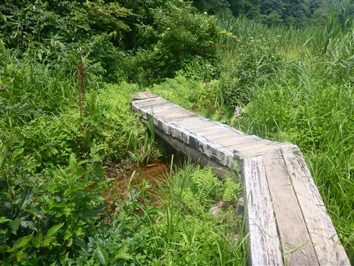
斑尾高原で昼食をとる。湿原でおやつをたらふく食べたので、
軽食と昨日の山のご褒美のソフトクリームを食べる。
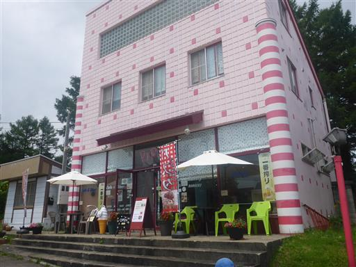
午後は雷滝に行ってみることにする。
駐車場にごろごろ亭があるが閉鎖されている。
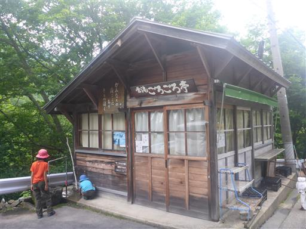
名勝雷滝の標識。
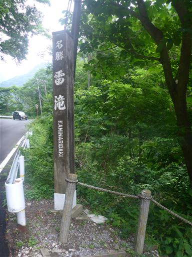
滝までは階段を下りていく。
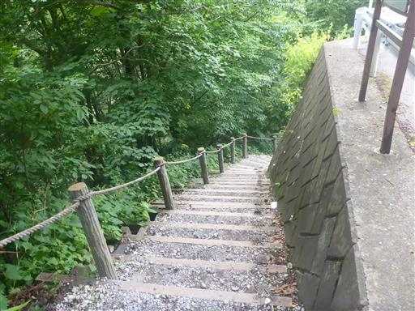
しらばらく下ると滝が見えてくる。
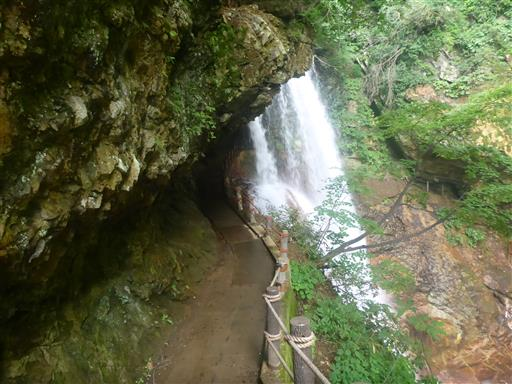
この滝は裏見の滝で、滝の裏側を通ることができる。
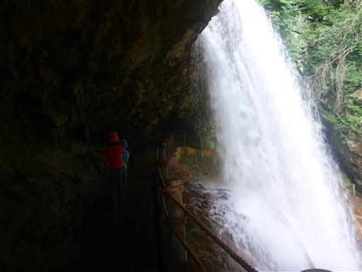
落差30mのそこそこ立派な滝だ。
滝のすぐ側から見学することができる。
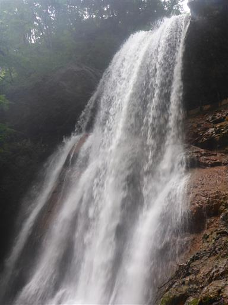
流れ落ちた水は深い渓谷を流れていく。

滝壺。
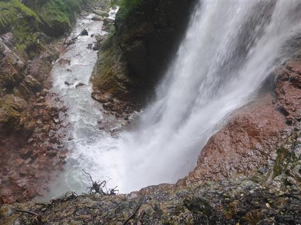
再び滝の裏側に戻る。不思議な光景だ。
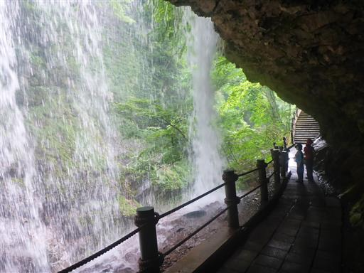
石碑が置かれている。遥か古から滝の裏側に行く道があったのだろうか？
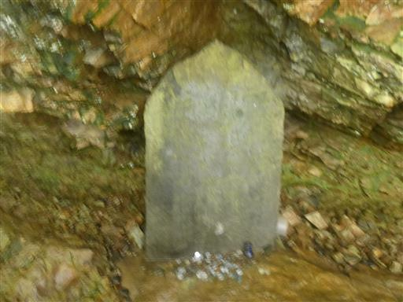
傘が落ちている。誰かが落としてしまったのだろうか？ちょっと回収は難しそうだ。
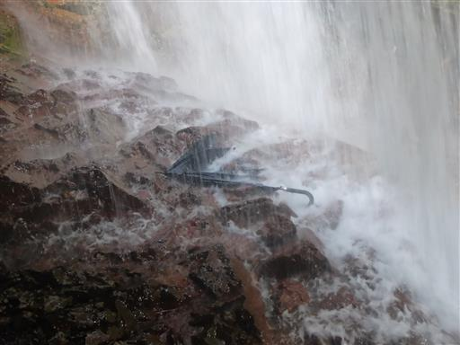
裏側から上を見上げる。勢いよく水が飛び出している。
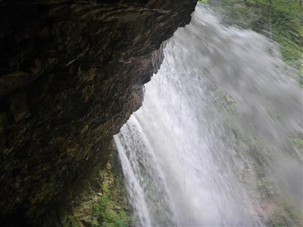
帰りは階段を登る必要がある。暑い。

観光を終えたらそのまま風呂に向かう。今回はアルプス温泉のリベンジ。
実際は温泉ではなくただの街中の銭湯。
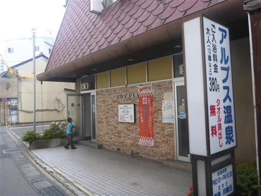
その後、TOMATO食品館で買い出し。
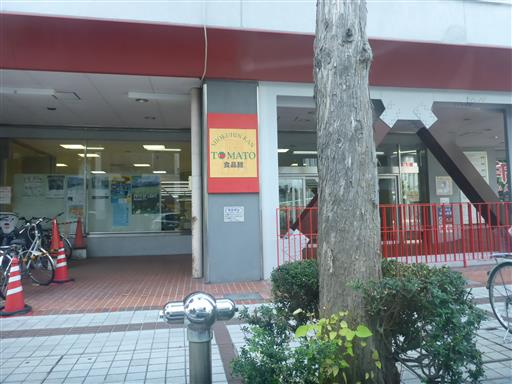
キャンプ場に戻ってくる。少し時間があるため、大座法師池を一周してみる。
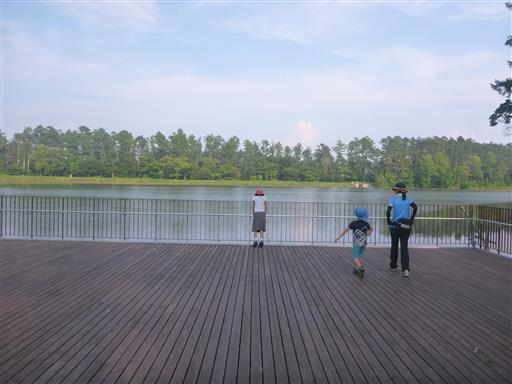
ナデシコの花がたくさん咲いている。蕾はもじゃっとしている。
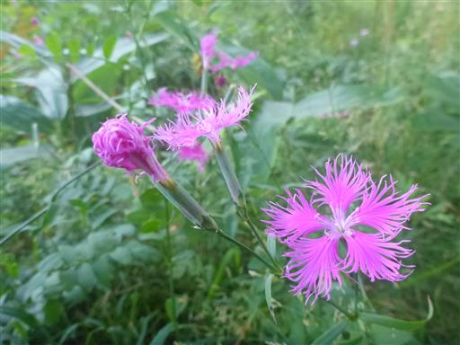
キキョウの蕾。
ボート乗り場。
今シーズンの営業は終了と書かれている。
まだ8月上旬なのだが、もう営業はしないのだろうか…？
池一周遊歩道に入って行く。
比較的大きな池。もとは自然の池だったものに堤防を造って大きな池にしたものらしい。
池の東側。ちょうどキャンプ場の対岸だ。
祠がある。いつ頃造られたものなのだろうか？
池の水の出口。開閉式にはなっておらず、一定以上の水量になると水が流れ出るようになっている。
ここに来て、ようやく飯縄山の全体像を見渡せるようになる。
よく目立つ立派な山だ。
池をぐるっと一周し、最後はアスレチックのいくつかをやりながらテントサイトに戻る。
キャンプ場で仲良くなった家族に誘われて花火をやる。
息子は友達ができて嬉しそうだ。